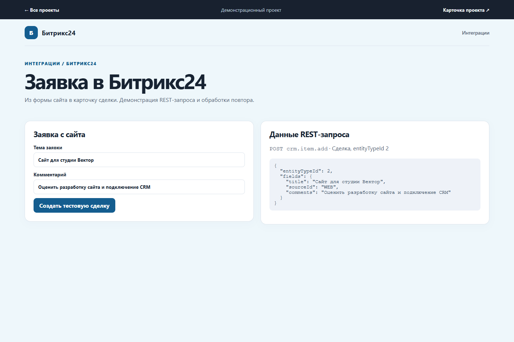
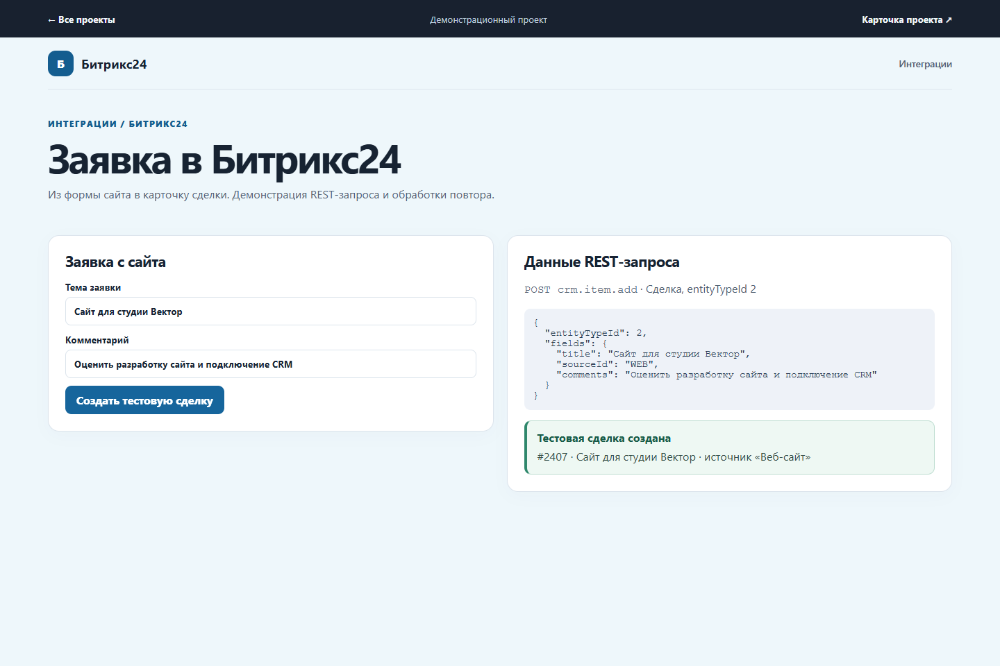

Интеграции / Демонстрационный проект
Заявка с сайта в Битрикс24
Отделу продаж нужна сделка с темой, комментарием и источником из формы сайта.
Что реализовано
Собрал демонстрацию сопоставления полей, предпросмотр REST-запроса, тестовую карточку сделки и обработку повтора.
Что показать клиенту
Измените тему заявки и создайте тестовую сделку. Повторная отправка покажет, как предотвращается дублирование.


Проект работает в браузере на тестовых данных. Документация API ↗

